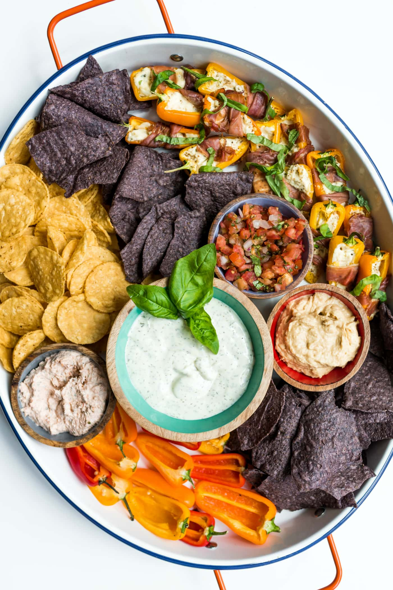

Savory Favorites
A savory food has a salty or spicy flavor rather than a traditional sweet flavor when baking. The saltiness of the food is pleasing to the sense of taste or smell especially by reason of effective seasoning. In other countries such as Britain and Italy, they consider savory foods as a small dish that is designed to "clear the palate" before or after a main entree.
Key Factors in Savory Foods
- Seasoning with salt
- Seasoning with other spices listed below:
- Five Spice
- Garlic
- Basil and Rosemary
- Paprika and Chili Powder
- Oregan and Parsley
Savory Appetizers
A majority of appetizers served at restaurants, parties, or social gathering before the main meal and are almost always a savory dish. Plates and trays with a different display of foods and snacks are common in this aspect. Some examples include charcuterie boards, salads, bread and butter or other finger foods.